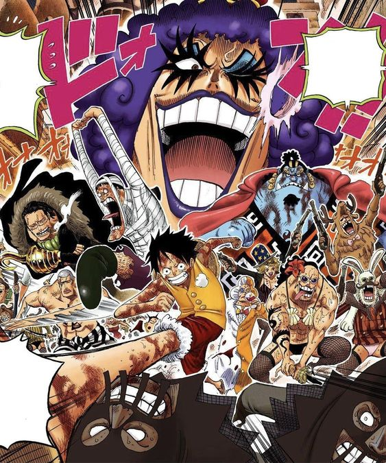
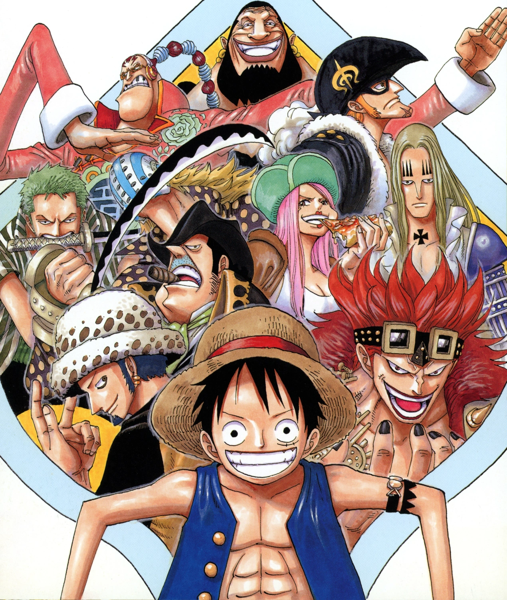
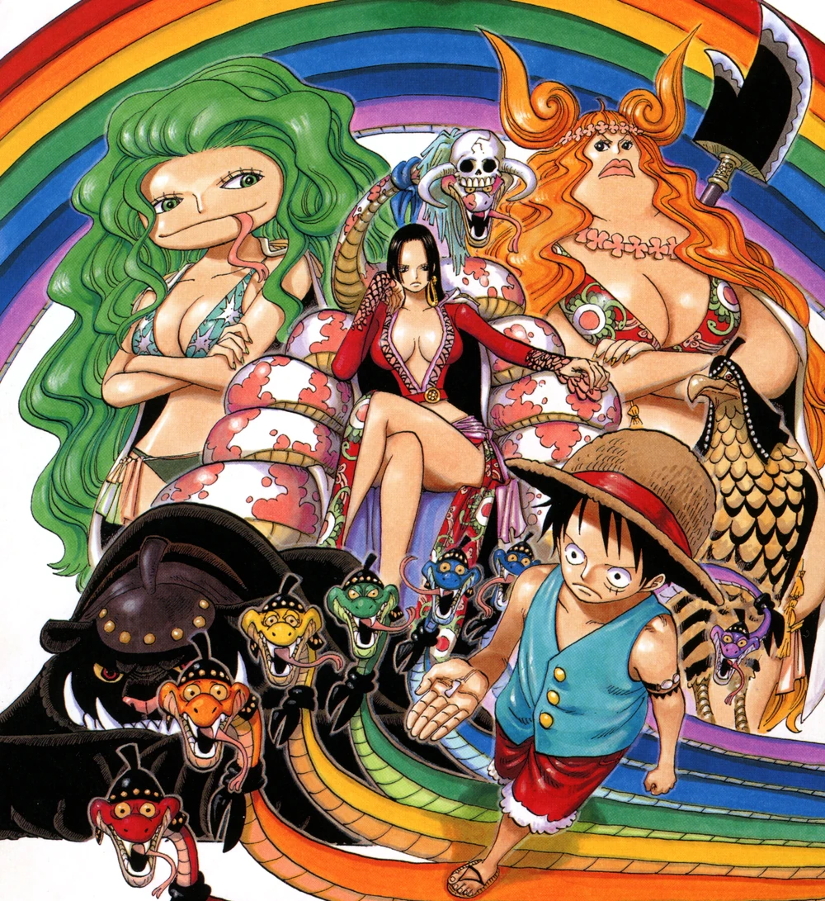
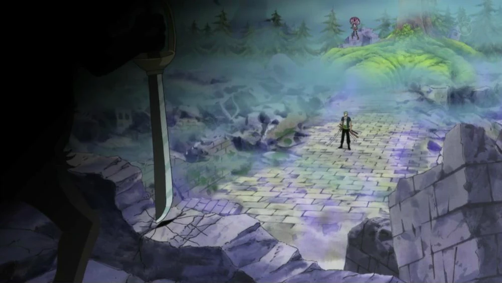
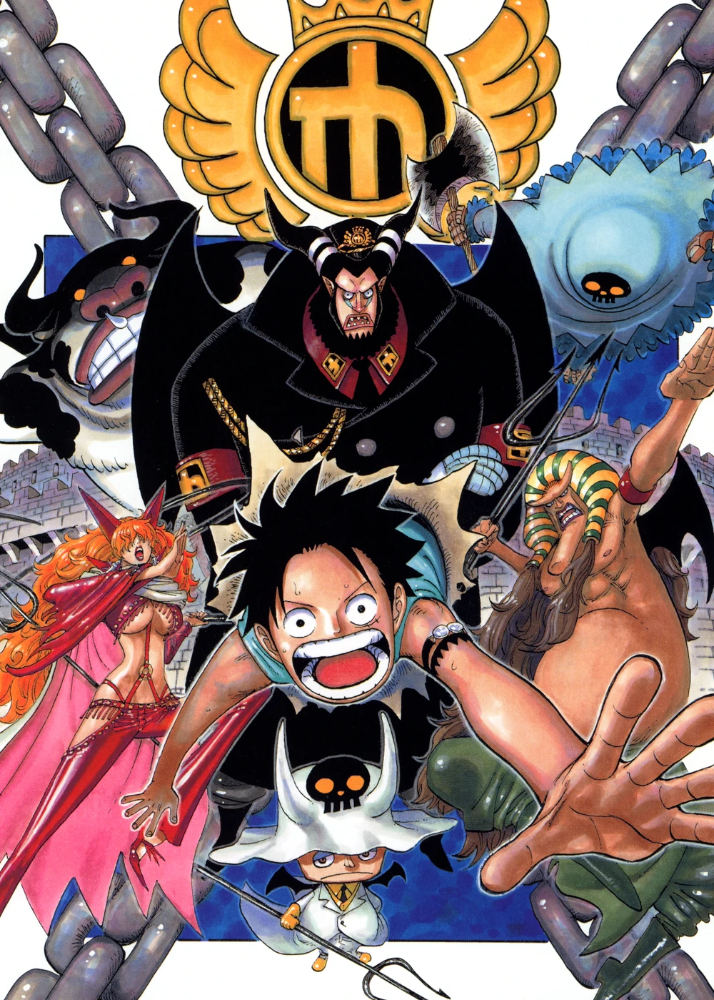
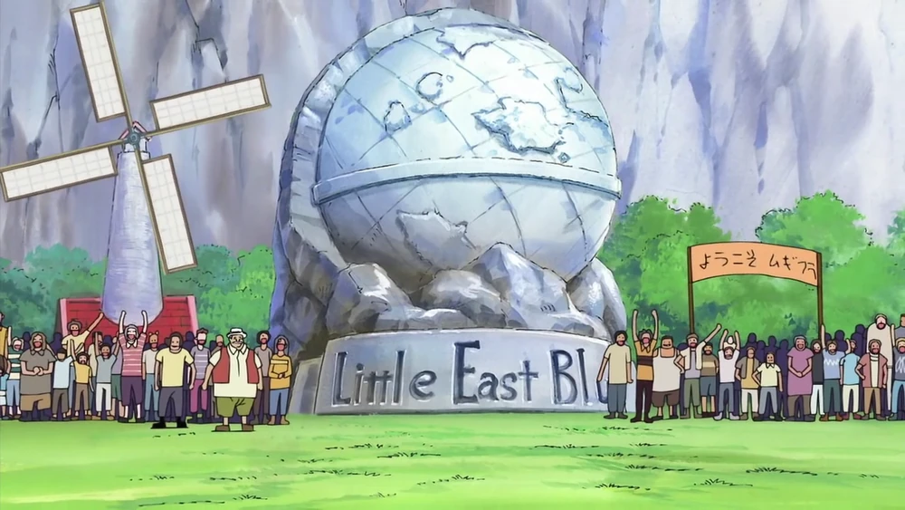
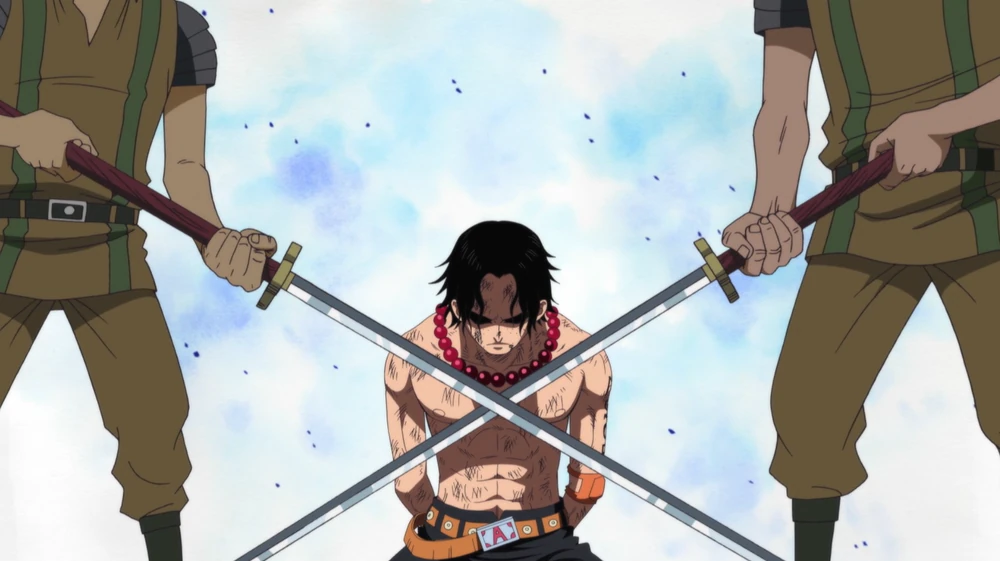

Summit War Saga

Sabaody Archipelago Arc

Kru Topi Jerami tiba di Kepulauan Sabaody, tempat di mana bajak laut berkumpul
sebelum menuju New World. Di sini, mereka berhadapan dengan Tenryuubito, kelompok
aristokrat yang sangat berkuasa, serta Kizaru, seorang Admiral Angkatan Laut. Arc
ini menampilkan momen penting ketika Bartholomew Kuma memisahkan kru, mengirim
mereka ke lokasi yang berbeda di seluruh dunia, mengubah dinamika kelompok secara
drastis.
Episode: 385-405
Amazon Lily Arc

Luffy terdampar di Amazon Lily, pulau yang dihuni oleh wanita dan dipimpin oleh Boa
Hancock, salah satu Shichibukai. Di pulau ini, Luffy berjuang untuk melindungi diri
dari wanita yang ingin menangkapnya. Hancock jatuh cinta pada Luffy dan memutuskan
untuk membantunya melanjutkan perjalanan ke Impel Down untuk menyelamatkan Ace,
kakaknya.
Episode: 408-417
Straw Hat's Separation Serial Arc

Arc ini menggambarkan perpisahan emosional kru Topi Jerami setelah peristiwa
Marineford. Setiap anggota kru mengalami momen refleksi dan kesedihan, menyiapkan
jalan bagi pengembangan karakter mereka selama dua tahun ke depan.
Episode: 418-421, 453-456
Covers
Impel Down Arc

Luffy menyusup ke penjara bawah laut Impel Down, tempat Ace ditahan. Di sini, Luffy
bertemu dengan musuh lama dan sekutu, seperti Buggy dan Crocodile, serta menghadapi
berbagai tantangan untuk melarikan diri dari penjara. Konflik di dalam Impel Down
memperlihatkan tekad Luffy untuk menyelamatkan Ace, serta membangun aliansi yang tak
terduga.
Episode: 422-425, 430-452
Little East Blue Arc

Arc ini adalah filler yang mengikuti petualangan Luffy dan kru di East Blue, di mana
mereka membantu penduduk setempat yang terancam oleh bajak laut. Arc ini memberi
gambaran tentang dampak dari kehadiran kru Topi Jerami di dunia mereka.
Episode: 426-429
Filler Arc
Marineford Arc

Arc ini adalah klimaks dari Summit War Saga, di mana Luffy terlibat dalam perang
besar di Marineford untuk menyelamatkan Ace dari eksekusi. Pertarungan epik antara
Angkatan Laut dan berbagai bajak laut terjadi, menghasilkan banyak kematian dan
mengubah dunia bajak laut selamanya. Ace akhirnya tewas dalam pertempuran,
meninggalkan Luffy hancur dan bertekad untuk menjadi lebih kuat.
Episode: 457-489
Post-War Arc

Toriko Crossover Arc